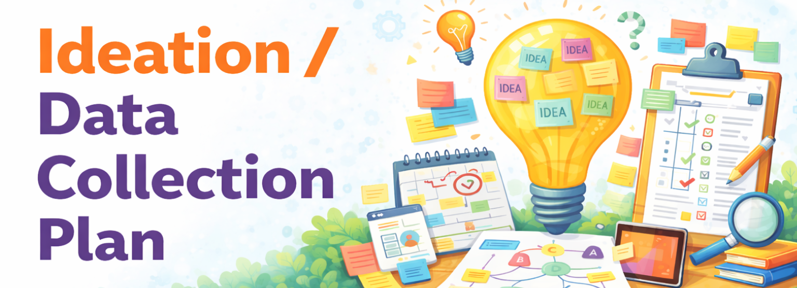

Generate options and plan how you will collect evidence
This sprint focuses on ideation and early planning. Choose the section that matches your project type: Ed Tech Tool D&D, Course D&D, or Teacher Inquiry.

Jump to the track you are working on.
Generate and refine multiple ideas for an educational technology tool, then choose one direction to move forward.
Complete these tasks early so you can draft a strong deliverable and get feedback on time.
Submit by Friday so the instructor can review and provide formative feedback before we meet.
Combine everything into one Google Doc (link supporting documents if needed) and submit a shareable link to this Google Spreadsheets file under the corresponding worksheet.
Make sure your Google doc allows your peers to leave comments.
Generate and refine multiple high-level course structures, then choose one plan to develop further.
Complete these tasks early so you can draft a strong deliverable and get feedback on time.
Submit by Friday so the instructor can review and provide formative feedback before we meet.
Combine everything into one Google Doc (link supporting documents if needed) and submit a shareable link to this Google Spreadsheets file under the corresponding worksheet.
Make sure your Google doc allows your peers to leave comments.
Plan what evidence you will collect, how you will collect it, and how you will protect participants and data.
Complete these tasks early so you can draft a focused plan and get feedback on time.
Submit by Friday so the instructor can review and provide formative feedback before we meet.
Combine everything into one Google Doc (link supporting documents if needed) and submit a shareable link to this Google Spreadsheets file under the corresponding worksheet.
Make sure your Google doc allows your peers to leave comments.
Review at least one peer’s submission (Design Idea Brief or Data Collection Plan).